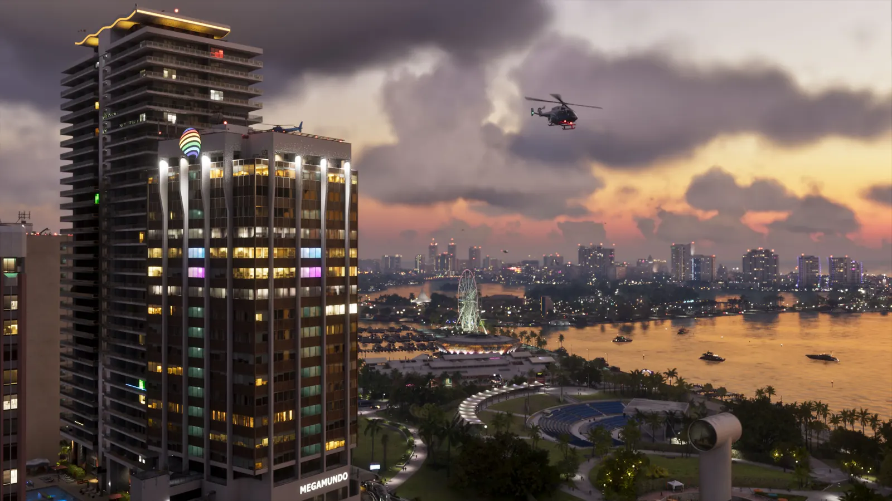
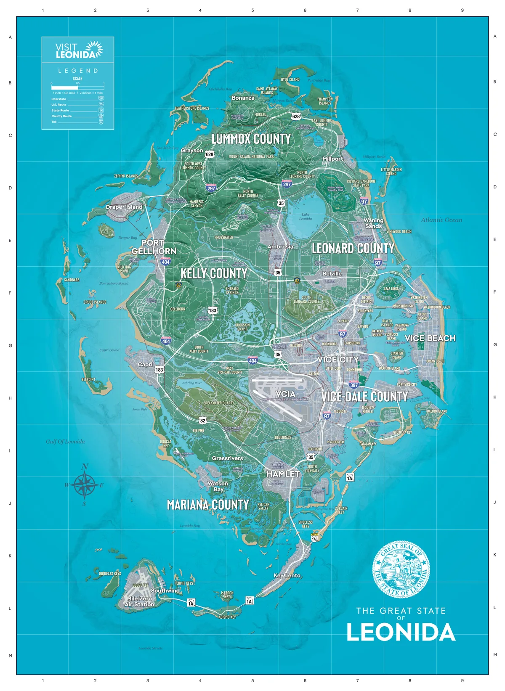

Mapa
Leonida é o estado fictício de GTA VI, inspirado na Flórida. O site oficial apresenta seis regiões principais. Conheça cada uma antes de sair explorando.
Foto: © Rockstar Games
Pôster oficial
Seis regiões,
um estado
- Vice City Costa leste, condado de Vice-Dale
- Leonida Keys Ilhas ao sul, pela estrada 1A
- Grassrivers Pântanos do sudoeste, condado de Mariana
- Port Gellhorn Costa oeste, condado de Kelly
- Ambrosia Interior, ao sul do lago Leonida
- Mount Kalaga Parque nacional no norte, condado de Lummox

Explore
O mapa de Leonida
Use a roda do mouse, a pinça no celular ou os botões para aproximar; arraste para mover. Com o mapa focado, as setas movem, + e − mudam o zoom e 0 centraliza. Escolha uma região no mapa ou na lista para ver o cartão-postal oficial.
Escolha uma região para ver o cartão-postal oficial e o que tem por lá.
Mapa e cartões-postais: © Rockstar Games, kit de mídia oficial.
Em texto
Leonida em resumo
As mesmas seis regiões do mapa, com o condado do pôster oficial, a inspiração no mundo real e um veículo que combina com o terreno.
| Região | Onde fica (pôster oficial) | Inspiração | Veículo sugerido |
|---|---|---|---|
| Vice City | Costa leste, condado de Vice-Dale | Miami | Grotti Cheetah (1995) |
| Leonida Keys | Ilhas ao sul, pela estrada 1A | Florida Keys | Shitzu Squalo |
| Grassrivers | Sudoeste, condado de Mariana | Everglades | Aerobarco |
| Port Gellhorn | Costa oeste, condado de Kelly | Não informada pela Rockstar | Vapid Ganado |
| Ambrosia | Centro, ao sul do lago Leonida | Não informada pela Rockstar | Dinka Enduro |
| Mount Kalaga | Norte, condado de Lummox | Não informada pela Rockstar | Vapid Dominator Buggy (1967) |
Inspiração checada em 25/11/2026. O "veículo sugerido" é uma recomendação do guia com base no terreno, não uma informação oficial. Fontes: pôster oficial do mapa (abre em nova aba), Só em Leonida (abre em nova aba) e Game Informer (abre em nova aba).
Fichas
Conheça cada região
Favorite as regiões que quer visitar primeiro e marque as visitas no checklist.
Carregando as regiões…